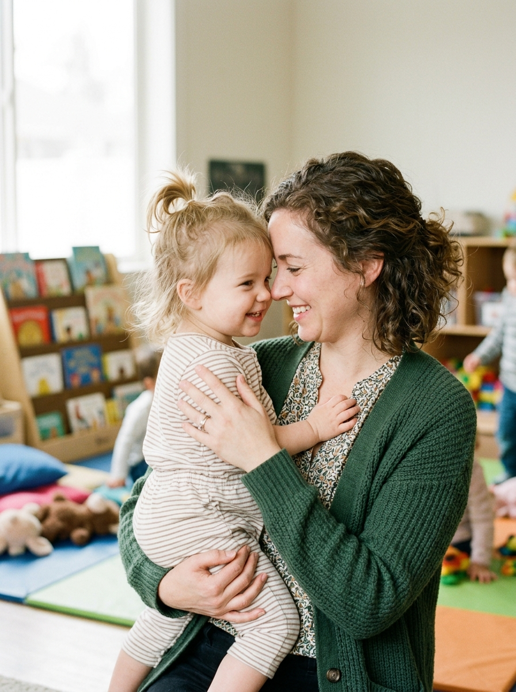
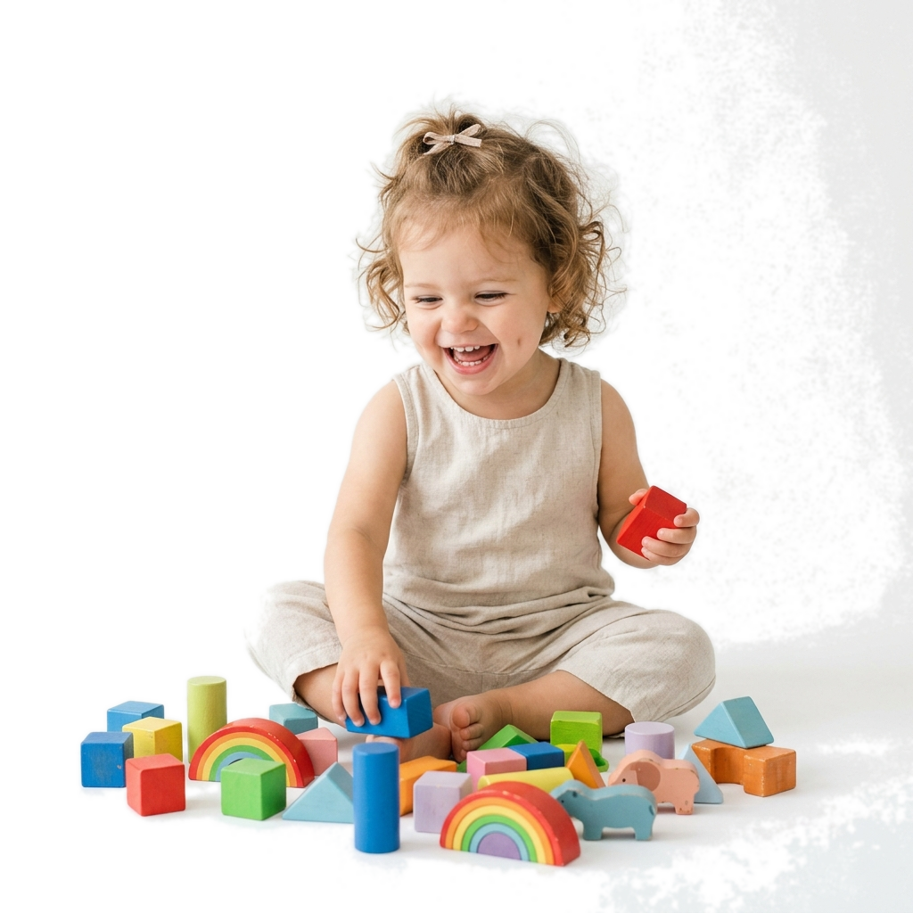
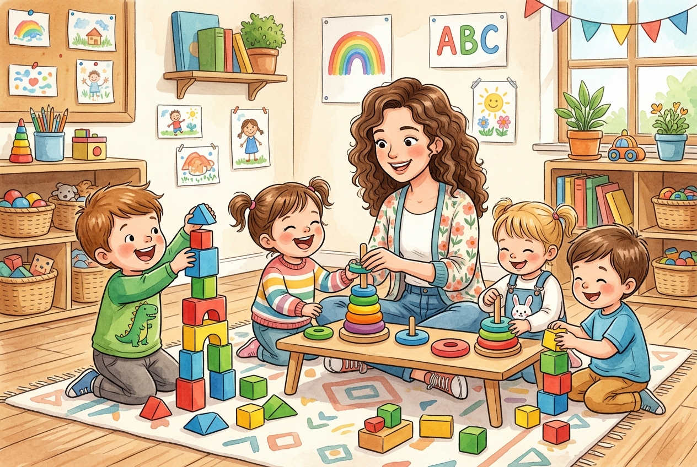
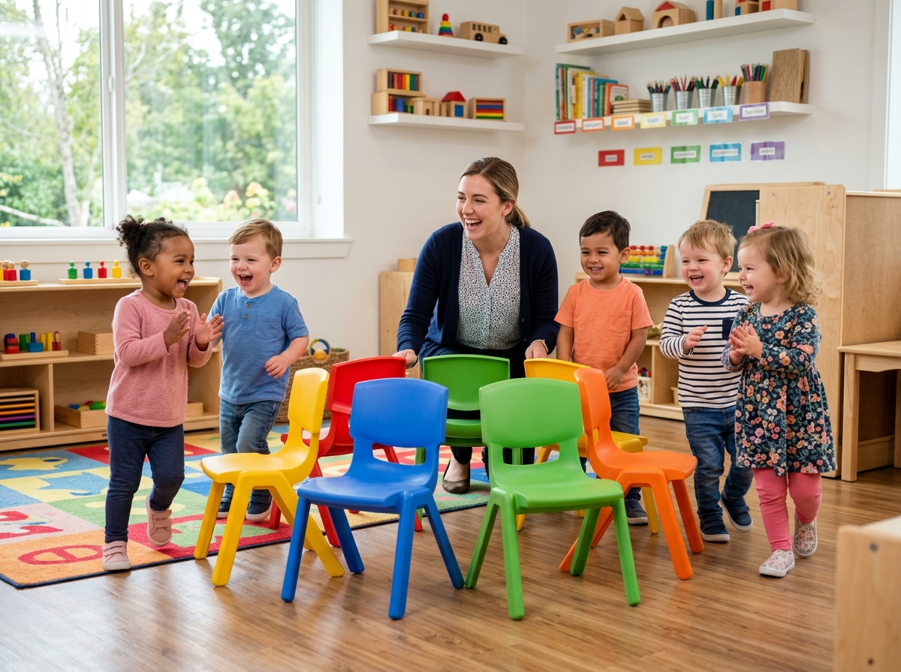
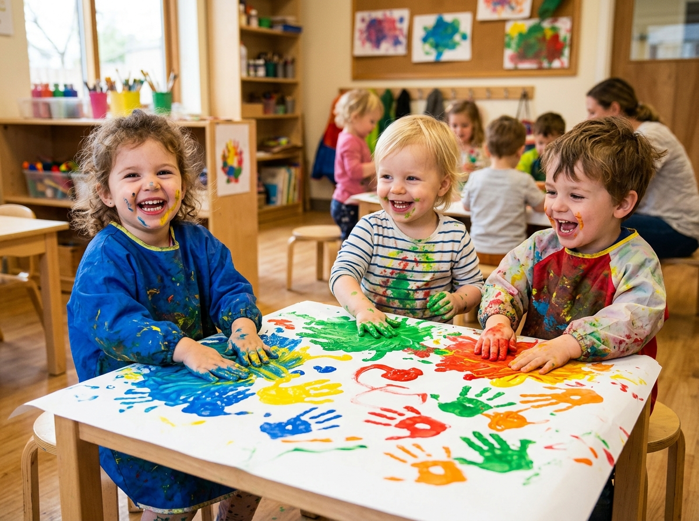
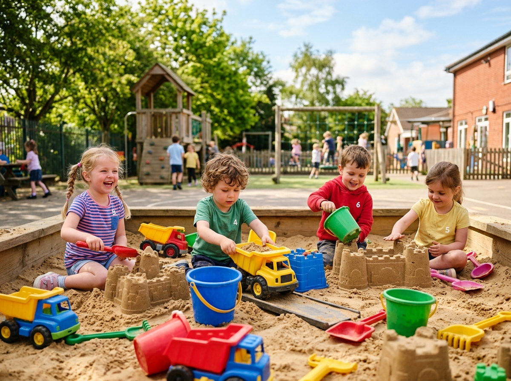
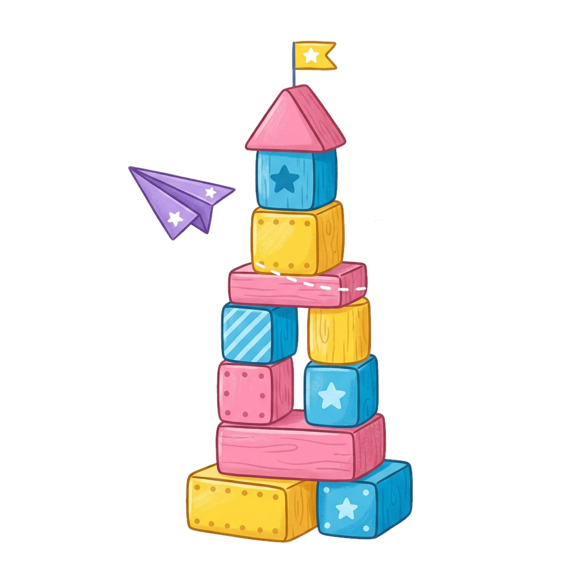
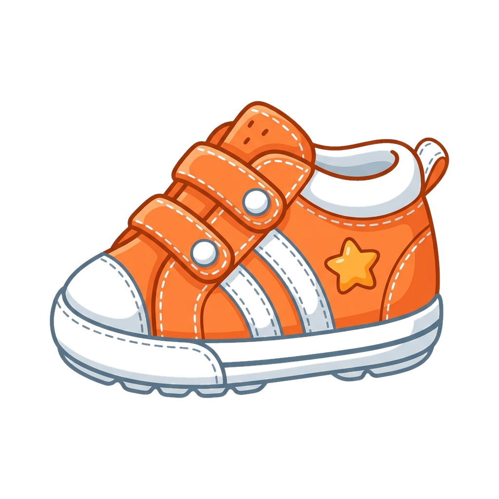
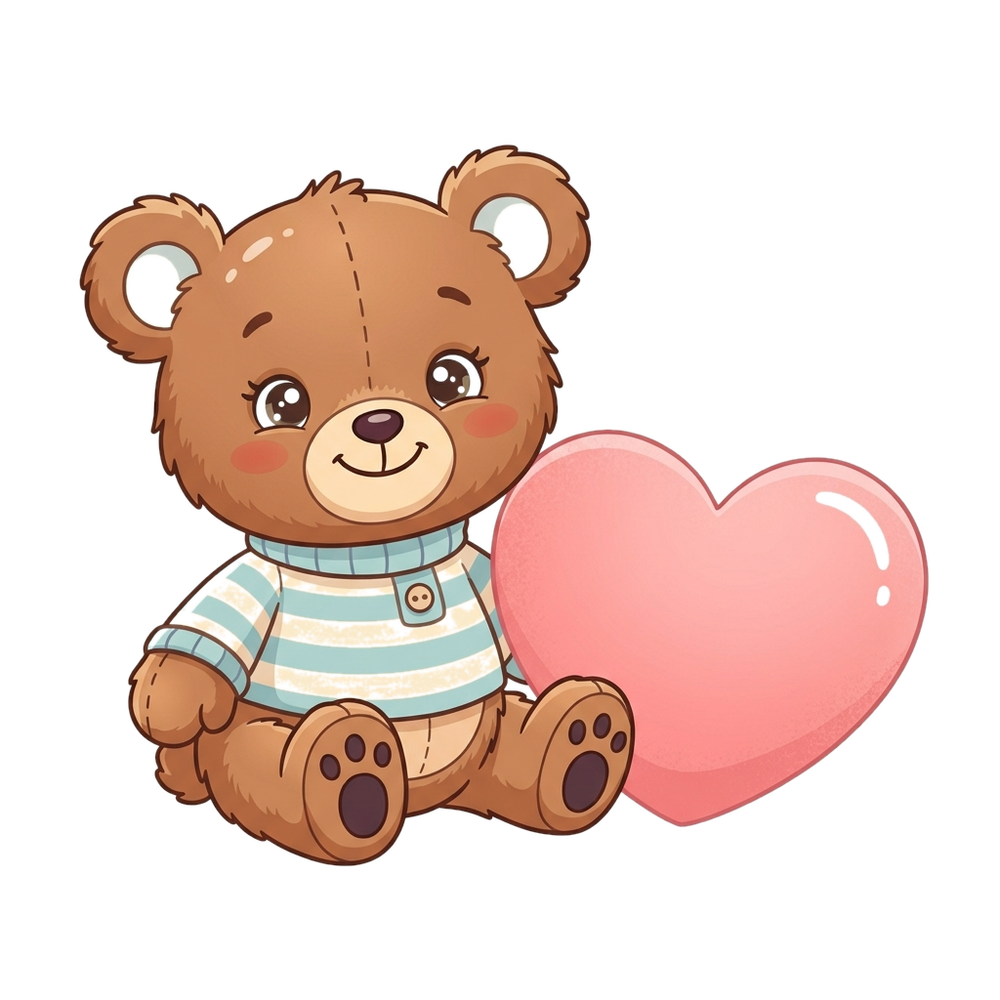
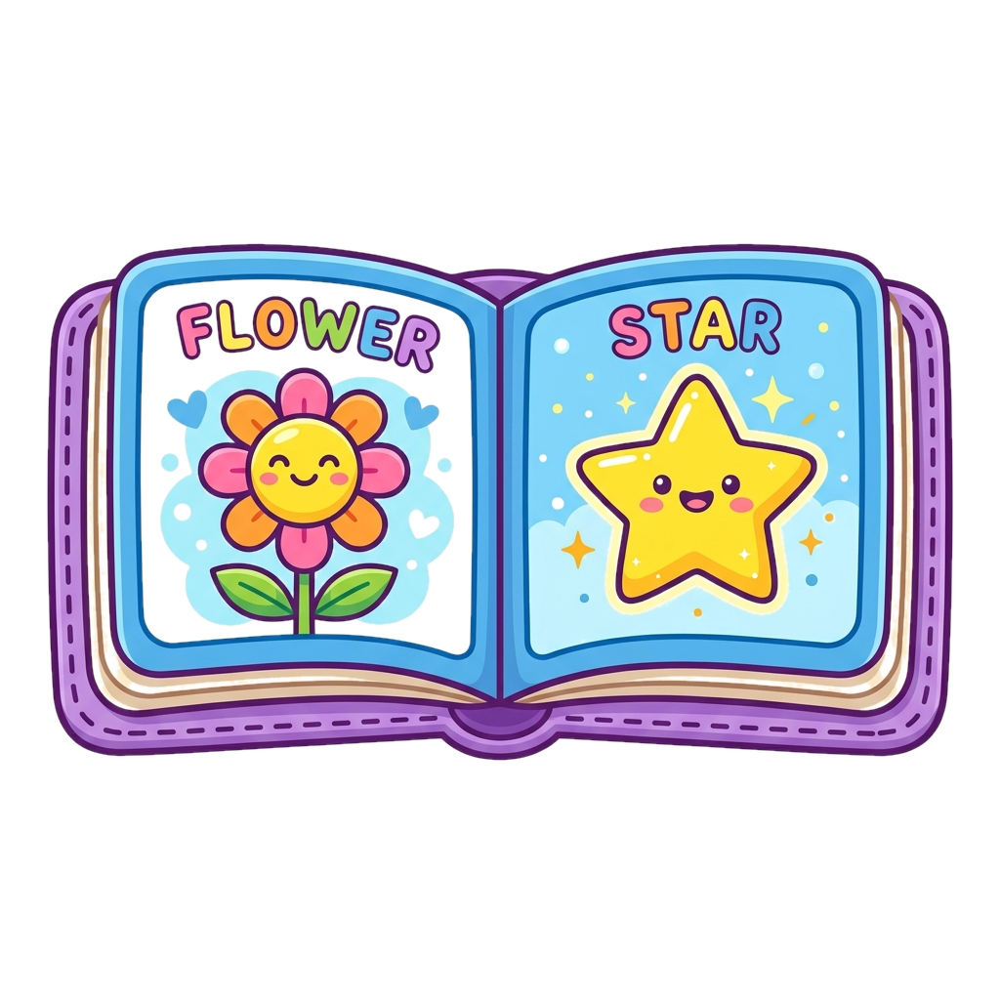

RYANS PRE-SCHOOL
DAY CARE | PLAY GROUP | NURSERY | JUNIOR KG | SENIOR KG
DAY CARE | PLAY GROUP | NURSERY | JUNIOR KG | SENIOR KG

Designed to meet the developmental needs of precocious, active, and ever-aware toddlers aged 18 to 25 months old. Here, we welcome first words, guide tiny steps, and celebrate a world full of early wonders.
Toddlers aged 18–25 months who are exploring their widening world. We focus on keeping the child happy, engaged, and secure in a warm classroom.


Warm nurturing interactions with caregivers, days spent in a home-like environment for learning, individualized attention and meaningful partnerships with parents.
Help the teddy bear find all the toys of the matching color! Tap them before they float away.
Color Hunt is a playful sensory game built specifically for our playgroup toddlers (ages 2-3) to learn primary colors in an engaging way.
Tapping the correct colors helps infants build visual association, hand-eye coordination, and cognitive response.
The Toddler begins a rapid development in their physical, cognitive, social and linguistic skills. Socially a toddler may begin asserting his individual needs, thoughts and preferences.
During this outward phase of development, he is caught uncomfortably between infancy and personhood; he may swing rapidly between clingy behaviors and stubborn independence.
Nurturing little minds through play, learning and real-world experiences.

A glimpse into a day full of interactive games, park adventures, and creative arts.
Hear the sweet giggles floating through the warm sunshine as caregivers guide their steady steps down the slides. Held safely, they learn to run, slide, and explore the fresh green grass with eyes full of pure wonder.

Musical ChairsLittle hands clap together in happy rhythm as warm smiles welcome them to the circle. Guided by their teacher's soft singing, they play games, learning to share and make their very first friends.

FingerpaintMessy, paint-covered fingers bring bright giggles! Toddlers happily stamp their tiny hands onto paper to create artwork for mommy and daddy, building the confidence to explore.

Sandbox CastlesHappy little builders sit side-by-side, sharing toy trucks and patting warm sand into castles. Together, they laugh as their towers tumble, learning the simple joy of sharing under reassuring watch.

Acquiring primary physical, social, and mental concepts
Stacking two to four blocks, scribbling, turning pages of a book, and using a spoon with help. Toddlers are capable of exercising the gross motor muscles necessary to run, walk up stairs with help and climb onto a curb. Some show symptoms of bowel control; however, most are not yet ready for toilet training.

Socially, the Toddler begins to engage other children in play and, on a very limited basis, begins to share toys. They assert individual needs, thoughts, and preferences, juggled between clingy behaviors and stubborn independence.

Toddlers learn mental skills that are used in the process of acquiring knowledge (memoring, perception, and imitation). These are developed by showing affection, listening to the toddler or looking at pictures and through imitation. They are able to identify body parts, three dimensions and say “my” or “mine”.

Linguistically, the Toddler begins a rapid acquisition of words. With the help of love or baby sign language, they may actually begin posing in sentences and are able to adequately express their wants and needs to caregivers.
To Pronounce and Proclaim the truth of knowledge and wisdom and facilitate to deliver and renew the strength of the Young Ones to " Arise and Shine ".